Los problemas de
votar
Los problemas de
Los problemas de
la boleta única electrónica
la boleta electrónica
el voto electrónico
Autores
Iván Barrera Oro (@HacKanCuBa)
Javier Smaldone (@mis2centavos)
[Descargar presentación]
[Descargar vídeos]

Esta presentación está bajo una Licencia Creative Commons Atribución-CompartirIgual 4.0 Internacional y se encuentra en actualización permanente.
Constitución de la Nación Argentina
Artículo 37.- Esta Constitución garantiza el pleno ejercicio de los derechos políticos, con arreglo al principio de la soberanía popular y de las leyes que se dicten en consecuencia.El sufragio es universal, igual, secreto y obligatorio.
Nuestro sistema electoral
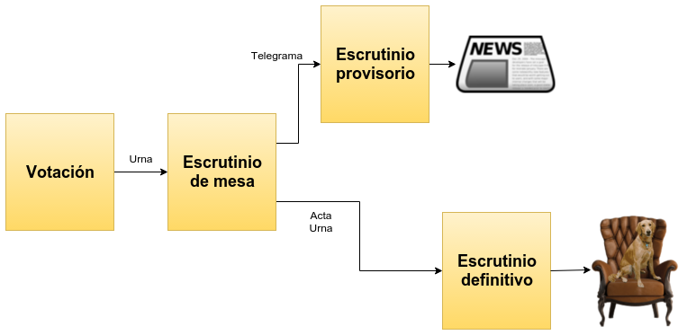Nuestro sistema de votación
(Sistema francés de boletas partidarias)
Problemas:
- Robo de boletas
- Boletas falsas
- Boletas marcadas (clientelismo)
- Voto cadena o calesita
Nuestro sistema de escrutinio
- Mesa:
- Lo realiza el presidente de mesa ante fiscales
- Cuenta votos, genera telegrama y actas
- Provisorio:
- Lo realiza el Poder Ejecutivo
- Cuenta telegramas
- Definitivo:
- Lo realiza Poder Judicial
- Cuenta actas
¿La solución?
La “boleta única electrónica”
(vot.ar®)
- Sistema de voto electrónico con respaldo en papel.
- El voto es impreso en el papel y almacenado en un chip RFID.
- La máquina que es usada para votar, es usada luego para contar.
- La máquina imprime actas y telegramas.
- La máquina transmite telegramas para el escrutinio provisorio.
- La máquina asiste en el escrutinio definitivo.
La boleta
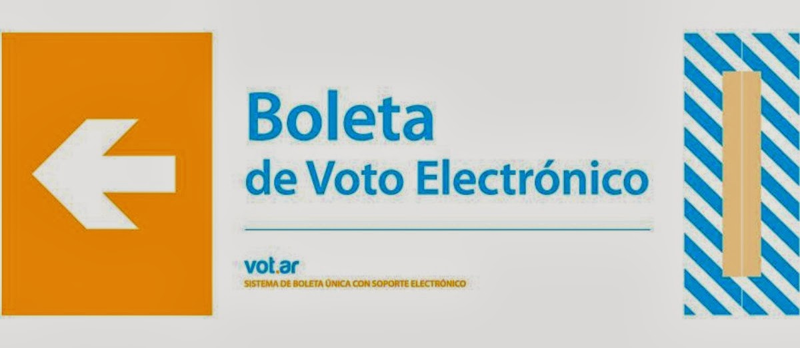La boleta
(Ahora sí)
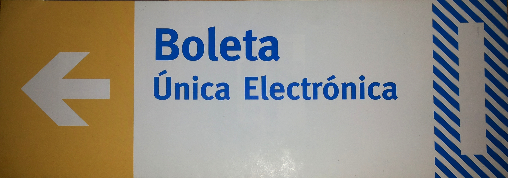Porque ahora "no es voto electrónico".
El chip RFID
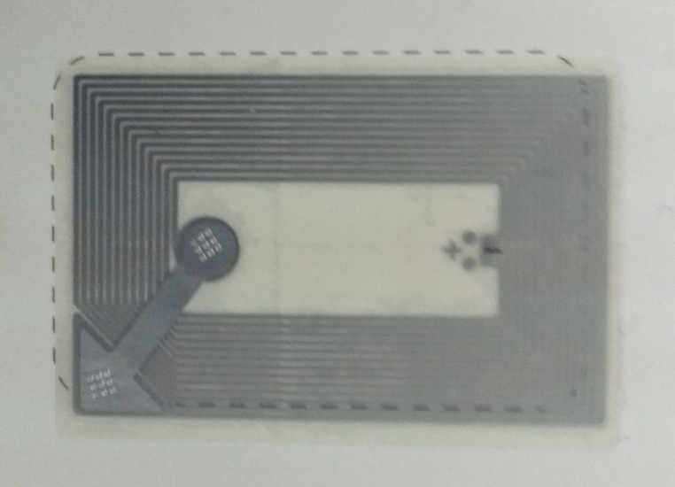La máquina
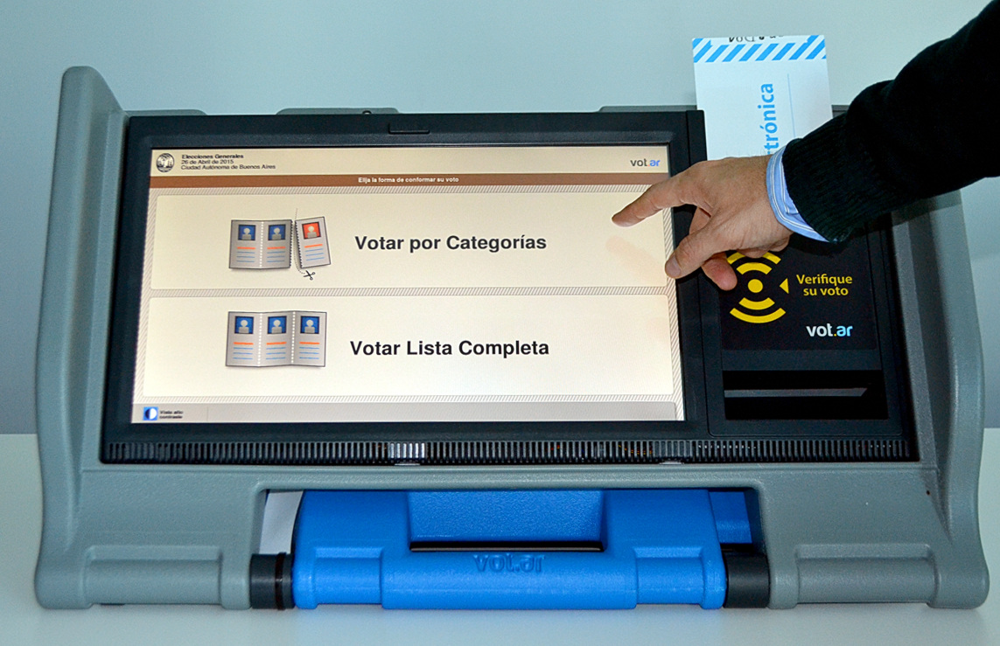Apertura de mesa
- Se enciende la máquina y se inserta el DVD.
- El presidente se identifica usando credencial (RFID) y clave (PIN).

Apertura de mesa
- Selecciona opción de Apertura de Mesa e ingresa la información solicitada.
- Inserta una boleta especial donde se imprimirán y grabarán los nombres del presidente y fiscales, y la hora de apertura.

Votación
- El votante se identifica en la mesa y el Presidente le entrega una boleta, renteniendo la mitad del troquel.
- Se dirige a la computadora de votación e inserta la boleta.
Votación
- Usando la pantalla táctil, el votante elige la composición de su voto.
- Al finalizar, el sistema imprime la boleta y graba el chip RFID.
Votación
- El votante puede acercar el chip RFID al lector y la máquina mostará lo que está grabado en él (salvo que el software haya sido alterado para mentir).
Votación
- El votante debe doblar la boleta por la mitad (para que el chip no pueda ser leído).
- El votante vuelve a la mesa y el presidente compara el troquel retira la mitad restante.
- Finalmente, el votante introduce la boleta en la urna.
Escrutinio de mesa
A las 18 horas, luego de finalizada la votación:
- El Presidente aproxima su credencial y luego el Acta de Apertura.
- Selecciona la opción de Cierre de Mesa.
- Inserta una boleta especial llamada Acta de Cierre y Escrutinio.
Escrutinio de mesa
- El Presidente abre la urna.
- Retira cada boleta y la acerca a la máquina, que leerá y contará lo grabado en el chip RFID (debiendo verificarse que coincide lo impreso y lo contado).
- Al finalizar, se imprime y graba el acta de Cierre y Escrutinio (varias copias).
Escrutinio provisorio
- El técnico de MSA arranca la máquina con el software de transmisión y la conecta a Internet.
- El delegado de la Justicia Electoral recibe de cada presidente el Acta de Cierre.
- La máquina lee el chip RFID del Acta de Cierre y transmite los resultados al centro de cómputos.
¿Qué podría salir mal?
Los técnicos
(Y la importancia del software)
La votación
(Buenos Aires, 5 de julio de 2015)
¿El chip y lo impreso coinciden?
El escrutinio
(Neuquén, 4 de octubre de 2015)
Sumemos
- Posibilidad de alterar el software.
- Falta de verificación del contenido del chip por el votante.
- Escrutinio de mesa "caja de supermercado".
¿Garantía del resultado?
¿Cambiar el CD?
(Hay otras formas...)
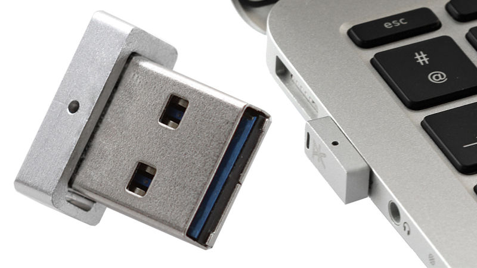Sí, las máquinas pueden bootear desde un pen drive.
La transmisión
(Buenos Aires, julio de 2015)
Auditorías
(¿La solución a todos los problemas?)
Auditorías
- Salta: Universidad Nacional de Salta.
- CABA:
- Universidad de Buenos Aires ($1.500.000)
- Instituto Tecnológico de Buenos Aires (¿sin código fuente?)
- ¿Partidos políticos?
Algunos problemas
(Que ninguna auditoría detectó)
Multivoto
(Múltiples votos en una sola boleta)
Multivoto
(Iterando sobre la entrada)
for elem in datos_tag.voto_categoria:
cod_categoria = elem["cod_categoria"].strip()
cod_candidato = elem["cod_candidatura"].strip()
if cod_candidato == COD_LISTA_BLANCO:
candidato = Candidato.one(codigo__endswith=cod_candidato,
cod_categoria=cod_categoria)
else:
candidato = Candidato.one(codigo__endswith="." + cod_candidato,
cod_categoria=cod_categoria)
candidatos.append(candidato)
Error de programador principiante.
Credenciales vulnerables
(Cualquiera puede ser presidente o técnico)
COD_TAG_VACIO = '\x00\x00'
COD_TAG_VOTO = '\x00\x01'
COD_TAG_USUARIO_MSA = '\x00\x02'
COD_TAG_PRESIDENTE_MESA = '\x00\x03'
COD_TAG_RECUENTO = '\x00\x04'
COD_TAG_APERTURA = '\x00\x05'
COD_TAG_DEMO = '\x00\x06'
COD_TAG_VIRGEN = '\x00\x07'
COD_TAG_INICIO = '\x00\x7F'
COD_TAG_ADDENDUM = '\x00\x80'
COD_TAG_NO_ENTRA = '\x00\x45'
COD_TAG_DESCONOCIDO = '\xff\xff'
Basta con escribir ese numerito en un chip.
Inyección de comandos
(Siempre sanear la entrada)
def crear_qr(datos):
qr = None
fd, temp_path = mkstemp(suffix='.png', prefix='qr_tmp_')
tmpl_comando = u'qrencode -o %s -s%s -m0 -l%s "%s"'
comando = tmpl_comando % (temp_path, unicode(QR_PIXEL_SIZE),
QR_ERROR_LEVEL, u''.join(datos))
os.system(comando)
¿Tu también, Bruto?
El hardware
(¿computadora o impresora?)
Puertos
(Demasiado para una impresora)
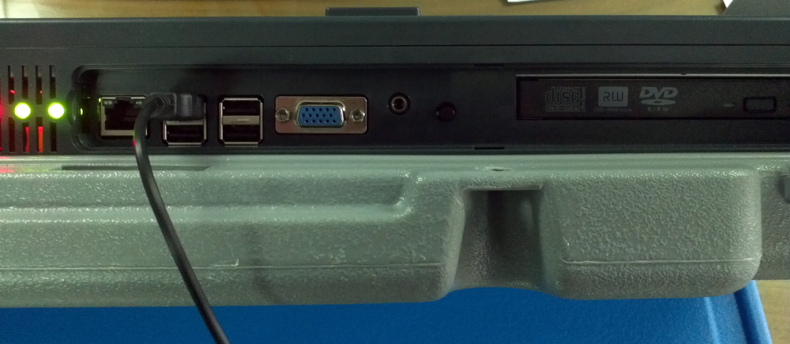¿Recuerdan el pen drive de recién?
Arquitectura

Sistema oculto
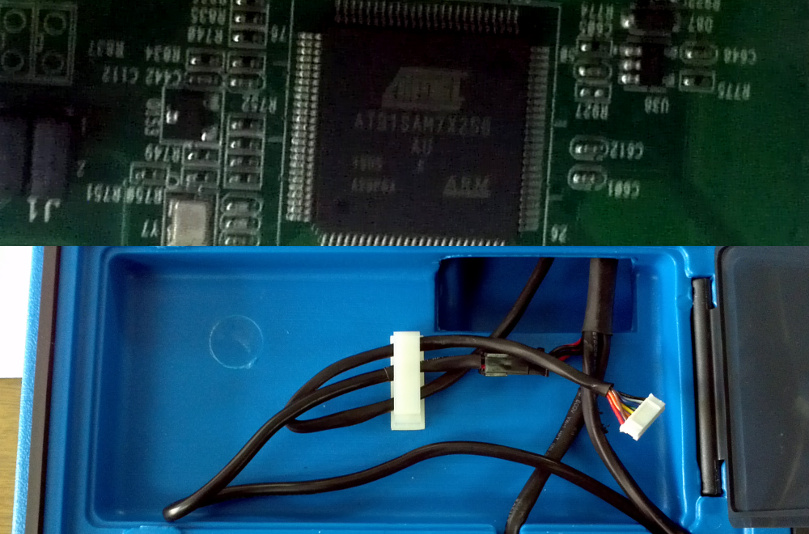Elección en CABA
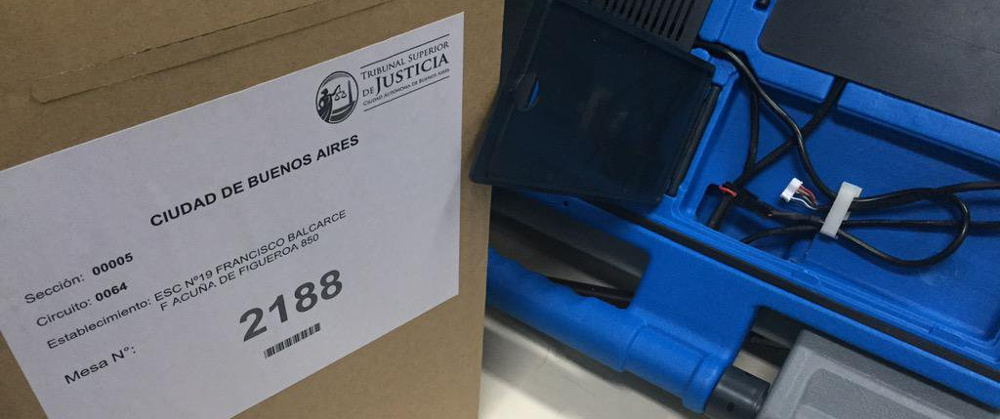https://blog.smaldone.com.ar/2015/07/15/el-sistema-oculto-en-las-maquinas-de-vot-ar/
Sobre el chip RFID
(Identificando por radiofrecuencia)
El chip RFID
- Cada chip tiene un identificador único de fábrica. (Es votar con boletas numeradas).
- No se utiliza ningún tipo de cifrado o autenticación.
- El modelo utilizado (NXP ICODE SLI/SLIX) puede leerse hasta desde 50 cm.
https://blog.smaldone.com.ar/2016/01/08/sobre-el-chip-rfid-de-la-boleta-unica-electronica/
Comprando votos
(El puntero digital)
Comprando votos
(El puntero digital)
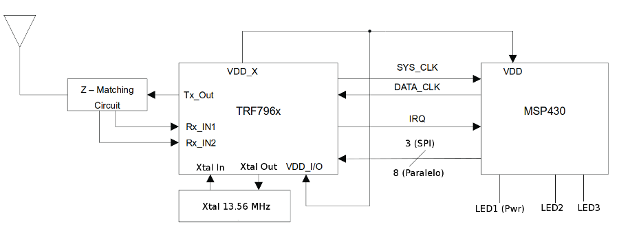También puede hacerse fabricando un dispositivo de $400.
Contando los votos
(¡Sin abrir la urna!)
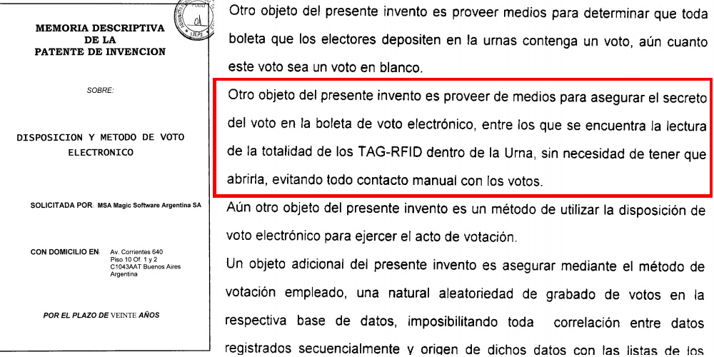RFID zapper
(Quemando boletas sin hacer humo)
Israel descartó un sistema de votación basado en RFID en 2010.
RFID zapper
(Casero, hecho por Iván)
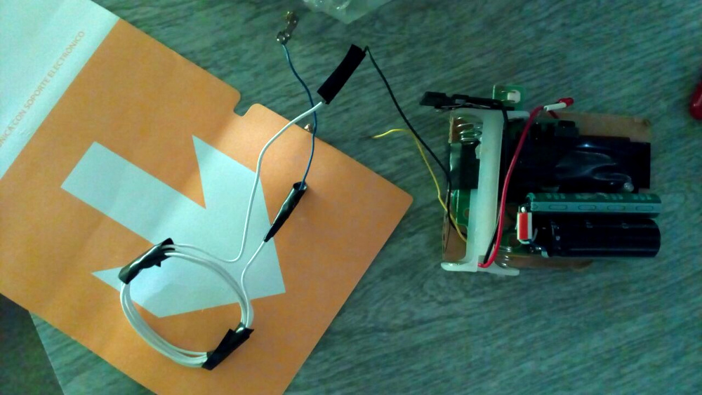Auditorías
Como siempre, nunca son suficientes
¡Pero no es vulnerable!
Y no hacen falta fiscales
(Porque es todo de una seguridad absoluta)
¿Y el resto del mundo?
EE.UU.
- Pioneros en votar con computadoras.
- Sólo el 30% de los condados vota con computadoras... y cada vez son menos.
- Lo que abundan son los sistemas de conteo electrónico (escaneo de marcas).
EE.UU.
Y actualmente están muy preocupados.
Holanda
- Comenzaron a mediados de los 90.
- Dejaron de hacerlo en 2008.
- Se encontraron con un problema adicional.
Alemania
- El principio de la publicidad de la elección del artículo 38 en relación con el art. 20 párrafo 1 y párrafo 2 ordena que todos los pasos esenciales de la elección están sujetos al control público, en la medida en que otros intereses constitucionales no justifiquen una excepción.
- En la utilización de aparatos electorales electrónicos, el ciudadano debe poder controlar los pasos esenciales del acto electoral y la determinación del resultado de manera fiable y sin conocimientos técnicos especiales.
Otros casos
- Irlanda (compraron, no usaron, tiraron).
- Bélgica (múltiples problemas, 40% ya abandonó el voto electrónico) .
- Reino Unido (prohibido).
https://blog.smaldone.com.ar/2016/06/26/el-uso-de-voto-electronico-en-el-mundo/
¿Quiénes votan usando computadoras?
India
- Máquinas de registración directa.
- Ninguna auditoría pública.
- Si auditás, vas preso (idea que algunos tomaron en la Argentina).
Brasil
- Máquinas de registración directa.
- Se rompió fácilmente el secreto del voto.
Venezuela
- Sistema de voto electrónico con respaldo en papel.
- Similar a Vot.ar pero con QR en vez de RFID.
- Smartmatic se presentó a la licitación de CABA.
Países que votan masivamente usando computadoras
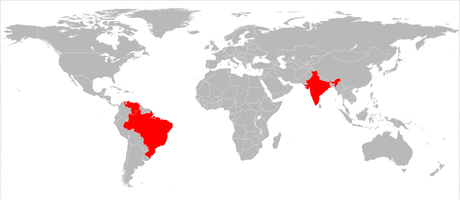La explicación de Urtubey
Otros países no se preocupan por esto, dice el vendedor.
Pero en otros países...
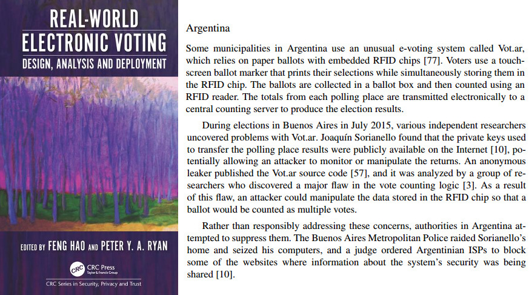...el uso de Vot.ar en CABA es ejemplo de fallas.
¿Cómo se vota en el mundo?
¡Como en Córdoba!
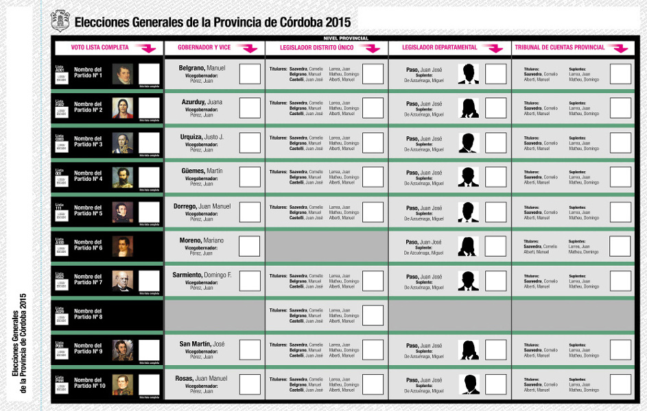¡O como en Santa Fe!
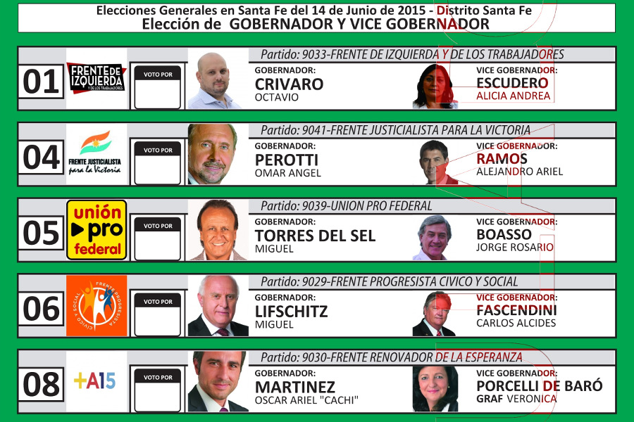¡O como los argentinos que viven en el exterior!
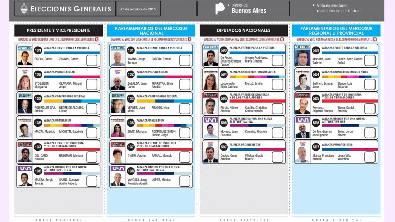¿Y el escrutinio?
A uno le cuesta creer que haya periodistas y politólogos así.
El culpable del problema de votar
Nuestra propuesta
- Consideremos la experiencia internacional.
- Votemos con un medio que esté bajo el control del votante.
- Apliquemos tecnología informática para maximizar el control ciudadano.
- Abramos el escrutinio al control público (multipliquemos los ojos).
- Propongamos. Discutamos. Mejoremos.
Reunión con Adrián Pérez
(9 de mayo de 2016)
Varios informáticos fuimos convocados a una reunión... cuando el borrador del proyecto de ley ya estaba escrito. La intención no era tomar en cuenta las críticas y advertencias.
Reunión con Adrián Pérez
(Javier Smaldone)
¿Cualquiera puede ser presidente de mesa?
Reunión con Adrián Pérez
(Enrique Chaparro)
"No venderle espejitos de colores a los electores".
Discusión en Diputados
Plenario de comisiones, 4 de agosto de 2016
- Algunos politólogos y políticos a favor.
- Todos los informáticos en contra.
- Y varias perlitas...
Discusión en Diputados
Mario Negri sobre Brasil
La ignorancia es atrevida.
Discusión en Diputados
Luis Lozano, presidente del TSJ de la CABA
No se enteró de lo que pasó en 2015.
Discusión en Diputados
Alejandro Molina (Red Ser Fiscal)
El voto electrónico es inevitable.
Discusión en Diputados
Rogelio Frigerio (Ministro del Interior)
Sobre la boleta única electrónica® boleta electrónica.
Discusión en Diputados
Teresa Ovejero (Secretaria Electoral de Salta)
Y a los diputados les gustó la fiscalización calificada.
Discusión en Diputados
Andrés Ibarra (Ministro de Modernización)
¿Y para qué invitaron a la secretaria electoral de Salta?
Discusión en Diputados
Daniel Penazzi
NO al voto electrónico.
Y las perlitas...
Discusión en Diputados
Delia Ferreira
¿Usaremos un sistema surcoreano?
Discusión en Diputados
Enrique Chaparro
Bundesverfassungsgericht.
Discusión en Diputados
Alfredo Ortega
Hackeando a los diputados.
Discusión en Diputados
Javier Smaldone
¡No conocían el "puntero digital"!
Discusión en Diputados
Todas las críticas en el plenario de comisiones, con versión taquigráfica
La respuesta a las críticas
Diputado Marcelo Wechsler
"El voto no e' violable".
Un sistema del siglo XXI
Diputada Karina Banfi
La diputada conoce las críticas, pero no le importan.
La justificación de todo
Diputado Pablo Tonelli
Robo de boletas. Robo de boletas. Robo de boletas.
La boleta única de papel
Evita el robo de boletas
(Sin poner en riesgo el secreto del voto, ni crear nuevas formas de fraude y sabotaje)
Más información
- http://comovotamos.org/
- https://bit.ly/votar-report
- https://blog.smaldone.com.ar/category/politica/e-voto/
[Descargar presentación]
[Descargar vídeos]
Última actualización: 9 de septiembre de 2016, 12:00hs.

Esta presentación está bajo una Licencia Creative Commons Atribución-CompartirIgual 4.0 Internacional y se encuentra en actualización permanente.